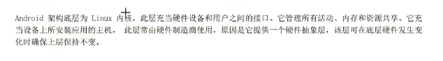

Android
Android
有哪些移动平台？
linux内核的作用？

Android使用的数据库是？
Android有哪些构建块？
分别都有什么作用？
Android项目的目录结构？

小部件的常用属性
Android颜色属性的表示？
aarrggbb
ListView的作用？
ImageView的作用？
webView组件的作用？
Android有哪些布局？
表格布局
框架布局
使用哪个方法来关联活动？
怎么注册活动为主活动？
活动的声明周期？
正在运行
已暂停
已停止
生命周期方法？
onResume！
Intent的作用？
如何使用显式的Intent启动活动？
如何使用隐式的Intent启动活动？
两个活动之间怎么传递数据？
ADB是什么？
adb有哪些常用路径？
devices
pull
push
install
Logcat有哪些级别？
（还有打印信息的方法）
内部存储与外部存储的概念？
共享首选项是什么？
一个程序建的数据库在哪？
如何以编程的方式创建数据库？
操作数据库的方法？
openOrCreateDatabase
updata
query
getColumnIndex
getColumnName
execute
如何检索受SQL语句影响的行数？
公开数据用哪个组件？
如何读写内部存储区？
getFileDir与getDir的作用？
Environment有多少状态？
getExternalStorageDirectory与getExternalStorageState的作用？
如何写入外部存储设备？
如何检索公选首选项？两个方法有何区别？
如何写入公选首选项？
如何获取网络权限？
如何启动一个服务？
启动的服务与绑定的服务有何区别？
什么是广播接收器？
广播以intent的形式传达。要接收和响应广播，应用要包括一个称为广播接收器的组件。广播接收器不提供UI。不过，它可以创建状态栏通知，以在收到播时向用户发出提示。
创建广播接收器时调用哪个方法？
注册广播接收器有哪两种方法？
菜单的三个元素的作用？
创建菜单要实现哪两个方法？
onCreateContextMenu()方法在什么时候调用？
ViewPage是什么？
如何将主体引用到整个应用？
自定义控件要拓展哪个类？
View
setGravity怎么使用？
AlarmManager中的set、setRepeat以及setInexactRepeating有什么区别？
常见的定位技术包括哪四种？
如何使用接收短信功能？
如何监听电话？
Canvas与Paint的区别？
如何画一个圆？
canvas.drawcircle(50, 50, 30, paint);
MediaPlayer类的getCurrentPosition方法与SetOnRepareListener方法有什么用？
在哪里声明权限？
如何在运行时申请权限？
安卓程序打包成什么格式的文件？
apk
Android
2023/06/14/subject/android/